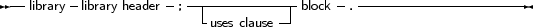
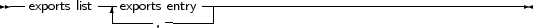
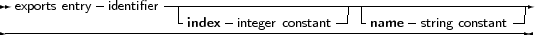

Free Pascal supports making of dynamic libraries (DLLs under Win32 and os/2) trough the use of the Library keyword.
A Library is just like a unit or a program:
_________________________________________________________________________________________________________Libraries

___________________________________________________________________
By default, functions and procedures that are declared and implemented in library are not available to a programmer that wishes to use this library.
In order to make functions or procedures available from the library, they must be exported in an exports clause:
_________________________________________________________________________________________________________Exports clause


___________________________________________________________________
Under Win32, an index clause can be added to an exports entry. An index entry must be a positive number larger or equal than 1, and less than MaxInt.
Optionally, an exports entry can have a name specifier. If present, the name specifier gives the exact name (case sensitive) by which the function will be exported from the library.
If neither of these constructs is present, the functions or procedures are exported with the exact names as specified in the exports clause.